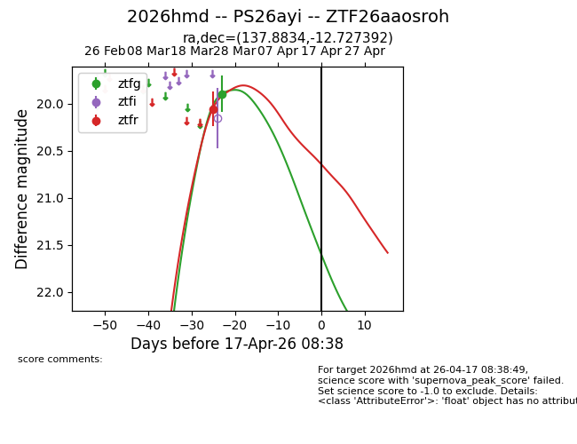
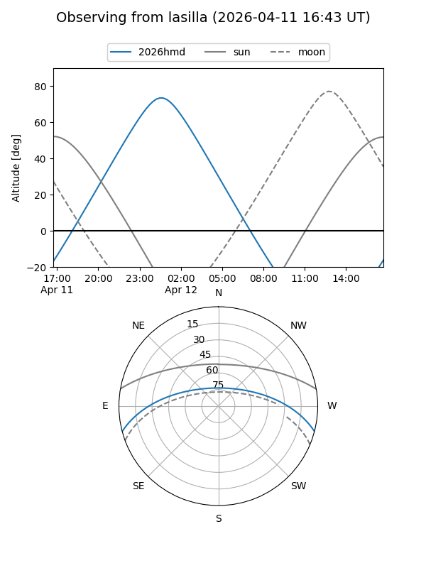
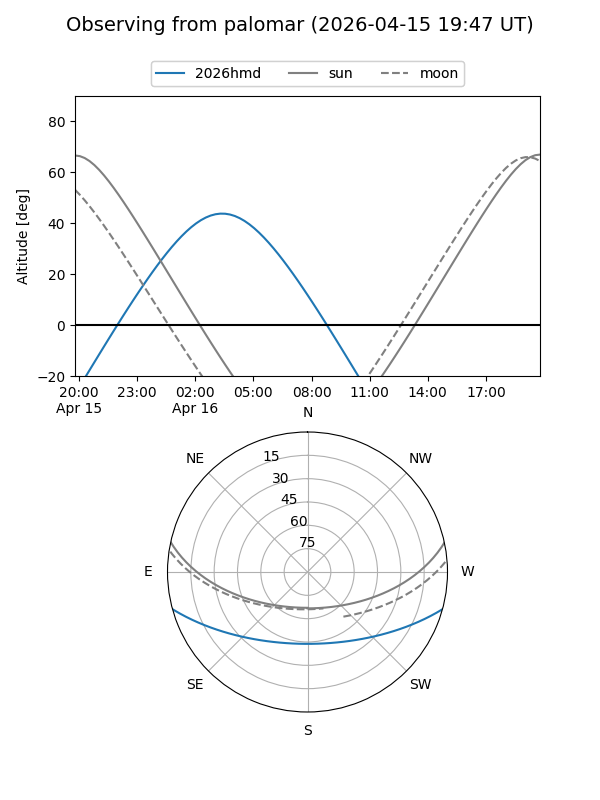
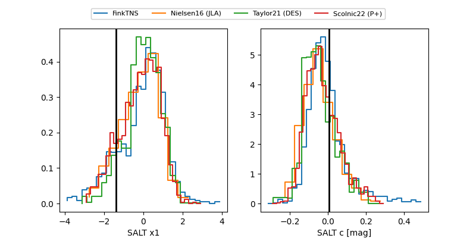

2026hmd
Target 2026hmd at 2026-04-17 08:44
Aliases and brokers:
FINK: link
Lasair: link
ALeRCE: link
TNS: link
YSE: link
alt names
ZTF26aaosroh (ztf,fink_ztf)
2026hmd (tns,yse)
PS26ayi (panstarrs)
Coordinates:
equatorial (ra, dec) = 137.8834,-12.72739
equatorial (HMS+DMS) = 09:11:32.02,-12:43:38.61
galactic (l, b) = (242.3998,+23.43894)
Flags:
Photometry:
last ztfg=19.89, ztfr=20.05
1 ztfg, 1 ztfr detections
Lightcurve

Visibility


Additional plots
